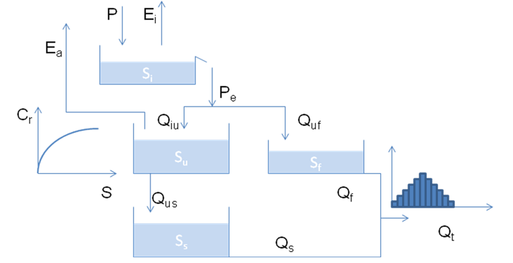

import numpy as np
import pandas as pd
import matplotlib.pyplot as plt
from ipywidgets import interact, FloatSlider, IntSlider
from datetime import date
from plot_hydrograph import plot_hydrograph, interactive_plot
from Weigfun import Weigfun
# This is the correct HBV model and is loaded but hidden on the jupyterbook.
def HBVTeacher(Par,forcing,Sin, hydrograph):
#HBVpareto Calculates values of 3 objective functions for HBV model
Imax = Par[0]
Ce = Par[1]
Sumax = Par[2]
beta = Par[3]
Pmax = Par[4]
Tlag = Par[5]
Kf = Par[6]
Ks = Par[7]
Prec = forcing['P'].values
Qo = forcing['Q'].values
Etp = forcing['PE'].values
tmax = len(Prec)
# allocate Si, Su, Sf, Ss, Eidt, Eadt, Qtotdt
Si = np.zeros(tmax)
Su = np.zeros(tmax)
Sf = np.zeros(tmax)
Ss = np.zeros(tmax)
Eidt = np.zeros(tmax)
Eadt = np.zeros(tmax)
Qtotdt = np.zeros(tmax)
Qs = np.zeros(tmax)
Qf = np.zeros(tmax)
# initialize Si, Su, Sf, Ss
Si[0] = Sin[0]
Su[0] = Sin[1]
Sf[0] = Sin[2]
Ss[0] = Sin[3]
dt = 1
#
# Model 1 SOF1
for i in range(0, tmax):
Pdt = Prec[i] * dt
Epdt = Etp[i] * dt
# Interception Reservoir
if Pdt > 0:
Si[i] = Si[i] + Pdt
Pedt = np.maximum(0, (Si[i] - Imax) / dt)
Si[i] = Si[i] - Pedt
Eidt[i] = 0
else:
# Evaporation only when there is no rainfall
Pedt = np.maximum(0, (Si[i] - Imax) / dt) #is zero, because of no rainfall
Eidt[i] = np.minimum(Epdt, Si[i] / dt)
Si[i] = Si[i] - Pedt - Eidt[i]
if i < tmax-1:
Si[i+1] = Si[i]
# Split Pe into Unsaturated Reservoir and Preferential reservoir
if Pedt > 0:
Cr = (Su[i] / Sumax) ** beta
Qiudt = (1 - Cr) * Pedt # flux from Ir to Ur
Su[i] = Su[i] + Qiudt
Qufdt = Cr * Pedt #flux from Su to Sf
else:
Qufdt = 0
# Transpiration
Epdt = max(0, Epdt - Eidt[i])
Eadt[i] = Epdt * (Su[i] / (Sumax * Ce))
Eadt[i] = min(Su[i] / dt, Eadt[i])
Su[i] = Su[i] - Eadt[i]
# Percolation
Qusdt = Pmax * (Su[i] / Sumax) * dt # Flux from Su to Ss
Su[i] = Su[i] - Qusdt
if i < tmax - 1:
Su[i+1] = Su[i]
# Fast Reservoir
Sf[i] = Sf[i] + Qufdt
Qfdt = dt * Kf * Sf[i]
Sf[i] = Sf[i] - Qfdt
if i < tmax-1:
Sf[i+1] = Sf[i]
# Slow Reservoir
Ss[i] = Ss[i] + Qusdt
Qsdt = dt * Ks * Ss[i]
Ss[i] = Ss[i] - Qsdt
if i < tmax-1:
Ss[i+1] = Ss[i]
Qtotdt[i] = Qsdt + Qfdt
Qs[i] = Qsdt
Qf[i] = Qfdt
# Check Water Balance
Sf = Si[-1] + Ss[-1] + Sf[-1] + Su[-1] #final storage
Sin = sum(Sin) #initial storage
WB = sum(Prec) - sum(Eidt) - sum(Eadt) - sum(Qtotdt) - Sf + Sin
# print(WB)
# Offset Q
Weigths = Weigfun(Tlag)
Qm = np.convolve(Qtotdt, Weigths)
Qm = Qm[0:tmax]
forcing['Qm'] = Qm
if hydrograph == 'TRUE':
## Plot
# hour=1:tmax\
fig, ax = plt.subplots(figsize=(12,8))
forcing['Q'].plot(label='Obserbed', ax=ax)
forcing['Qm'].plot(label='Model', ax=ax)
ax.legend()
return Qm
Interactive Python Page
The code on this page can be used interactively: click –> Live Code in the top right corner, then wait until the message Python interaction ready! appears.
When this page is activated:
Several packages will be imported automatically
Code cells will not be executed automatically (you do it!)
Which packages are imported when this page is activated?
import numpy as np
import pandas as pd
import matplotlib.pyplot as plt
from ipywidgets import interact, FloatSlider, IntSlider
from datetime import date
from plot_hydrograph import plot_hydrograph, interactive_plot
from Weigfun import Weigfun```
Models Exercise 2: Lumped Conceptual Model#
In this exercise you will create a lumped conceptual model. In the figure below a schematization of the conceptual model is given.

Part 1#
Write down all the different parts of the water balance with the correct units. Make use of the lecture slides and the equations and statements below.
Water can evaporate from the interception reservoir at the potential rate E\(_p\).
Water can spill from the reservoir when the level S\(_i\) reaches I\(_{max}\) (mm).
P\(_e\) is partitioned into P\(_i\) and P\(_f\) according to C\(_r\), calculated as:
\(Cr=(S_u/S_{umax})^{\beta}\)
Resulting for the fast storage: \(Q_{uf} = C_r*P_e\);
From which it can flow out: \(Q_f=K_f*S_f\);
For the underground storage holds: \(Q_{iu} =(1-C_r)*P_e\).
From here it can evaporate following: \(E_a=S_u/(S_{umax}*C_e)*E_p\);
Or it can percolate further into the ground: \(Q_{us} =P_{max}*(S_u/S_{umax})\);
From this storage it can flow out: \(Q_s=K_s*S_s\).
Q\(_f\) and Q\(_s\) are summed and routed through the triangular transfer function with base T\(_{lag}\)
Part 2 Create HBV model#
In this part you will code the lumped model, which is also called the HBV-model. Below the function HBVMod is given, but as you can see, part of the function is unfinished. Only edit the part below the statement UPDATE THE PART BELOW and above END.
After you finish this function, you can plot the hydrograph and see if the function is correct. The plot is interactive, use the sliders to change a parameter and see what their effect is.
def HBVMod(Par, forcing, Sin, hydrograph):
#HBVpareto Calculates values of 3 objective functions for HBV model
Imax = Par[0]
Ce = Par[1]
Sumax = Par[2]
beta = Par[3]
Pmax = Par[4]
Tlag = Par[5]
Kf = Par[6]
Ks = Par[7]
Prec = forcing['P'].values
Qo = forcing['Q'].values
Etp = forcing['PE'].values
tmax = len(Prec)
# allocate Si, Su, Sf, Ss, Eidt, Eadt, Qtotdt
Si = np.zeros(tmax)
Su = np.zeros(tmax)
Sf = np.zeros(tmax)
Ss = np.zeros(tmax)
Eidt = np.zeros(tmax)
Eadt = np.zeros(tmax)
Qtotdt = np.zeros(tmax)
Qs = np.zeros(tmax)
Qf = np.zeros(tmax)
# initialize Si, Su, Sf, Ss
Si[0] = Sin[0]
Su[0] = Sin[1]
Sf[0] = Sin[2]
Ss[0] = Sin[3]
dt = 1
#
# Model 1 SOF1
####################################################################
# UPDATE THE PART BELOW #
####################################################################
for i in range(0, tmax):
Pdt = Prec[i] * dt
Epdt = Etp[i] * dt
# Interception Reservoir
if Pdt > 0:
Si[i] = Si[i] + Pdt
Pedt =
Si[i] =
Eidt[i] =
else:
# Evaporation only when there is no rainfall
Pedt =
Eidt[i] =
Si[i] =
if i < tmax-1:
Si[i+1] = Si[i]
# Split Pe into Unsaturated Reservoir and Preferential reservoir
if Pedt > 0:
Cr =
Qiudt =
Su[i] =
Qufdt =
else:
Qufdt =
# Transpiration
Epdt =
Eadt[i] =
Eadt[i] =
Su[i] =
# Percolation
Qusdt =
Su[i] =
if i < tmax - 1:
Su[i+1] = Su[i]
# Fast Reservoir
Sf[i] =
Qfdt =
Sf[i] =
if i < tmax-1:
Sf[i+1] = Sf[i]
# Slow Reservoir
Ss[i] =
Qsdt =
Ss[i] =
if i < tmax-1:
Ss[i+1] = Ss[i]
Qtotdt[i] =
Qs[i] =
Qf[i] =
####################################################################
# END #
####################################################################
# Check Water Balance
Sf = Si[-1] + Ss[-1] + Sf[-1] + Su[-1] #final storage
Sin = sum(Sin) #initial storage
WB = sum(Prec) - sum(Eidt) - sum(Eadt) - sum(Qtotdt) - Sf + Sin
print(WB)
# Offset Q
Weigths = Weigfun(Tlag)
Qm = np.convolve(Qtotdt, Weigths)
Qm = Qm[0:tmax]
forcing['Qm'] = Qm
if hydrograph == 'TRUE':
## Plot
# hour=1:tmax\
fig, ax = plt.subplots(figsize=(12,8))
forcing['Q'].plot(label='Obserbed', ax=ax)
forcing['Qm'].plot(label='Model', ax=ax)
ax.legend()
return(Qm)
Cell In[3], line 56
Pedt =
^
SyntaxError: invalid syntax
Before we can compute the discharge based on your model, we need to import the forcing data from the text file into a dataframe.
data = pd.read_csv('Forcing.txt', skipinitialspace=True, delimiter='\t', names=['year', 'month', 'day', 'P', 'Q', 'PE'])
forcing = pd.DataFrame()
forcing['P'] = data['P']
forcing['PE'] = data['PE']
forcing['Q'] = data['Q']
forcing.index = data.apply(lambda x: date(int(x.year), int(x.month), int(x.day)), axis=1)
forcing.index = pd.to_datetime(forcing.index, format='%Y-%m-%d')
To create an interactive plot, the sets with minimum and maximum parameters should be given. If you want you can change these values.
If you run the cell below, an interactive plot will be generated. In this plot you can change the values of the different parameters, play with the values and see their effect on the hydrograph and the NSE value. How many times did you change the parameters to get a reasonable NSE value?
params = {
'Imax': {'min': 0, 'max': 10},
'Ce': {'min': 0.1, 'max': 1},
'Sumax': {'min': 40, 'max': 800},
'beta': {'min': 0.5, 'max': 5},
'Pmax': {'min': 0.001, 'max': 0.3},
'Tlag': {'min': 1, 'max': 10},
'Kf': {'min': 0.01, 'max': 0.1},
'Ks': {'min': 0.0001, 'max': 0.01},
}
interactive_plot(HBVMod, forcing, params)
---------------------------------------------------------------------------
NameError Traceback (most recent call last)
Cell In[6], line 1
----> 1 interactive_plot(HBVMod, forcing, params)
NameError: name 'HBVMod' is not defined
interactive_plot(HBVTeacher, forcing, params)